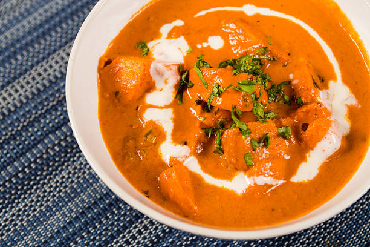

Butter Chicken

-
1.Marinate the chicken and referigate it.
-
2.Have a good garam masala powder.
-
3.Puree the tomato & cashews in a blender until smooth.Filter through a colander to remove the skin and the seeds.
-
4.Now fry and cook according to your requirement.
Your Butter Chicken is Ready!!